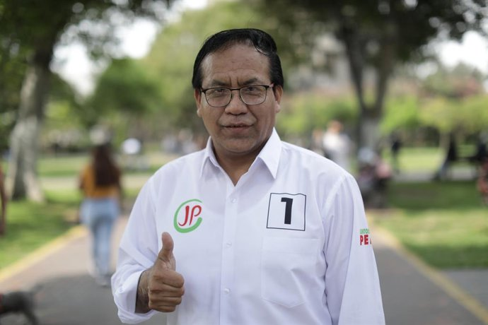

Paso a segunda vuelta: Tras el proceso electoral del 12 de abril de 2026, los resultados preliminares de la ONPE indican que Keiko Fujimori ha pasado a la segunda vuelta electoral.
Competencia: Lidera el conteo de votos con aproximadamente el 16.9%, seguida por Rafael López Aliaga.
Postura: Ha declarado que su objetivo principal es enfrentar a la izquierda radical y buscar el diálogo en el futuro congreso bicameral.
Antecedentes y Perfil
Carrera Política: Fue congresista (2006-2011) y Primera Dama de la Nación a los 19 años durante el gobierno de su padre, Alberto Fujimori.
Candidaturas Previas: Se postuló a la presidencia en 2011, 2016 y 2021, llegando a la segunda vuelta en las tres ocasiones pero sin lograr la victoria.
Situación Judicial: Desde julio de 2024 enfrenta el juicio oral por el "Caso Cócteles", donde se le imputan delitos de lavado de activos y organización criminal.
Roberto Sanchez Palomino

Situación Política Actual (Abril 2026)
Segundo lugar en el conteo oficial: De acuerdo con los resultados de la ONPE al 90%, registra aproximadamente el 11.98% de los votos válidos, superando por un estrecho margen a Rafael López Aliaga
Pase a la segunda vuelta: Con estos resultados preliminares, Sánchez pasaría a disputar la presidencia en una segunda vuelta electoral contra Keiko Fujimori.
Plataforma política: Su campaña se ha centrado en propuestas como el ingreso libre a la educación superior, mayores derechos laborales y la convocatoria a una nueva Constitución
Perfil y Antecedentes
Cargos previos: Se desempeñó como Ministro de Comercio Exterior y Turismo durante el gobierno de Pedro Castillo (2021-2022).
Vínculo político: Es considerado un aliado cercano del expresidente Castillo, habiendo prometido su libertad en caso de llegar a la presidencia.
Formación: Es psicólogo de profesión por la Universidad Nacional Mayor de San Marcos.
Rafael Lopez Aliaga
Situación Electoral (Abril 2026)
Tercer lugar en el conteo oficial: Según el reporte de la ONPE al 90.4% (actualizado al 15 de abril), López Aliaga registra el 11.91% de los votos válidos.
Disputa por el segundo puesto: Ha sido desplazado al tercer lugar por Roberto Sánchez (Juntos por el Perú), quien lo supera por un margen estrecho de aproximadamente 7,500 votos.
Denuncia de irregularidades: Ha calificado el proceso como un "sabotaje electoral" y ha solicitado la nulidad de las elecciones, alegando irregularidades en la instalación de mesas y el conteo de votos.
Convocatoria a protestas: Lideró plantones frente a la sede del Jurado Nacional de Elecciones (JNE) exigiendo transparencia en el escrutinio final.
Perfil y Trayectoria
Gestión Municipal: Se desempeñó como Alcalde de Lima (2023-2026), cargo al que renunció para postular a la presidencia.
Ámbito Empresarial: Es un destacado empresario con inversiones en los sectores de ferrocarriles (PerúRail), hotelería de lujo y finanzas.
Ideología: Se identifica con posturas de derecha conservadora y es miembro numerario del Opus Dei.